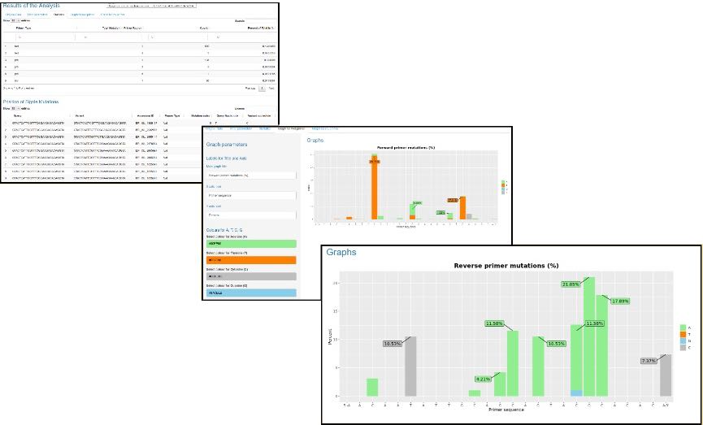

PR.A.T. (Primer Checker Results Analysis Tool) for SARS-CoV-2 is a tool to help you analyse the GISAID’s Primer Checker results about SARS-CoV-2.
It uses as input a Primer Checker results file containing mutations for forward/reverse primer and probe. One must also input the total number of SARS-CoV-2 variants Primer Checker used.
The results is a series of tables and graphs that can be used in publications presneting the information from the Primer Checker about SARS-CoV-2.
